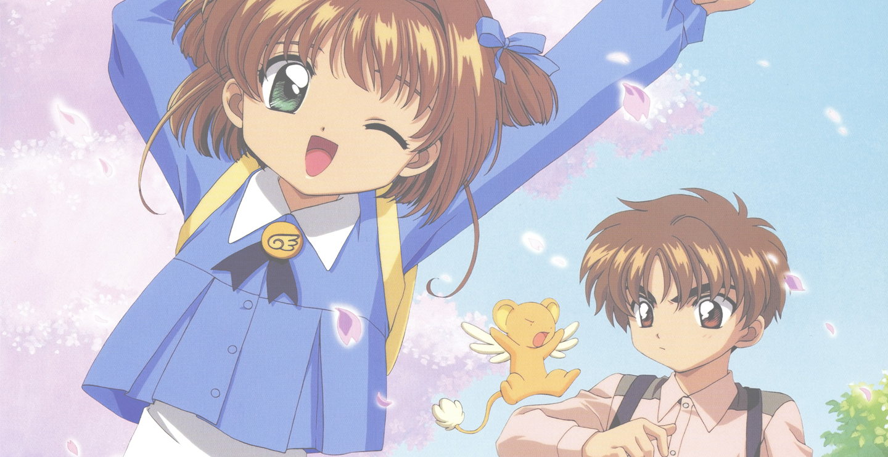

"Someday, I'll find someone who I love the most, and he will love me the most too."

This is my small dedication to my favorite manga/anime couple of all time, Sakura Kinomoto and Syaoran Li from the series Card Captor Sakura. I could write and talk about them as much as I want out of the blue at times, especially here online, where there are like-minded others who share the same sentiments as I have with our heroic couple and the series. It’s been a long time since I got inactive with their fandom, but it seems that no matter what subjects of interests that I come up with, I just kept coming back.
Finally, I’m surrendering myself to CCS fandom rekindled by rebuilding this very old shrine. It’s been 20 years, after all.
I first built Cherry Blossom, Little Wolf back in 2001 in a very old domain that I once owned, kinomoto.nu, under an old online alias, Ellie. During that time, there were so many different shrines and fansites dedicated to Card Captor Sakura, and that the sweet pairing of Sakura Kinomoto and Syaoran Li has been one of the most talked-about subjects of that series. There were plenty of Sakura and Syaoran pairing shrines out there, so I decided to make CBLW in a different approach: a small fanfic directory dedicated to the two. Eventually, I got into another subject of interest and eventually abandoned this fanfic shrine and even the domain.
You can check out the first (and only) version of CBLW via Wayback Machine, first launched in 2001.
In 2014, I attempted to open a blog dedicated to my newly-continued CCS alternate universe fanfic, Stuffed Animal, and also used the same title of my old fanfics directory site. However, this was more of a news, updates, and insights blog regarding Stuffed Animal and my ongoing sequel to that fanfic, Troop Pegalion. Later on that same year, I opened my new writing site, Adri Mars, and that I decided to integrate this fanfics update blog to there to save space and bandwidth. And then, the same thing happened again. I got into other interests and eventually ended up abandoning the continuation of Troop Pegalion for the time being until some 2 years later.
Here we are now in 2016, exactly 20 years since the first debut of the CCS manga, and once again my CCS fandom has reawakened. This will be my third (and probably final) attempt in showing my love for the series, especially for Sakura and Syaoran, as my commemoration for the series’ 20th birthday. If we were in the CCS world now, Sakura and Syaoran would be 30-year-old adults, married (to each other :D), and are parents to some wonderful children. I also prepared this shrine as my news and updates hub of some sorts for CLAMP’s announced CCS 20-Year Anniversary Project— a brand-new manga (sequel, maybe)?
Unless otherwise noted, all of the content, commentary, etc. provided in this site are credited to me. Card Captor Sakura will always belong to CLAMP. Any unofficial art, such as fanart, that are used here for this site are copyrighted by their respective artists, used with permission. (So far, there aren't any fanart used here, but I'm mentioning this now as a precaution.) If you plan on using any of my information and paste it in your site or blog, I appreciate a link to this site. You can use a link button/banner at the footer below should you choose.
I would like to thank the following for providing me the right tools and techniques to make this site possible:
My name is Adri, formerly known as Ellie back when anime/manga/video game shrines were at its early glory days. I have been a fan of CCS since an old classmate from college introduced me to the manga series back in 1996. Ever since then, Sakura Kinomoto and Syaoran Li became my favorite anime couple of all time, even till today. I show my devotion to the couple and the series by writing (alternate universe) fanfics with them, as well as building shrines such as this on occasion.
Aside from being a forever CCS fan, I like to play video games, read, write, web design/development, trying out new stuff, cook, eat, take photos, and travel. I also know four languages: Filipino/Tagalog, English, Japanese (almost), and (some) Spanish.
More in-depth info about me here on my personal blog if you're interested. Or, you can also visit my other site projects including my portfolio in my collective.